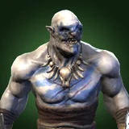
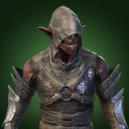
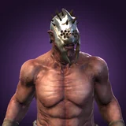
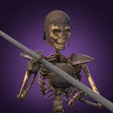
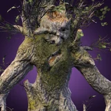

Wiki / Tables and calculators
Every shop unit against every alliance: 65 rows and 33 columns (16 race alliances, then 17 class alliances, left to right). A dot marks an alliance the unit carries. Unit names and alliance emblems are links.
The bottom rows give the number of shop units in each alliance and the steps at which it grants a bonus. Only different units on the board count, and only the highest step reached applies; see How alliances count . The mark ACE shows the alliance that switches on the extra effect of one of the 8 aces .
Unit Abyssal Ashen Drowned Feral Ironsight Mirefolk Oathbound Riftborn Scrapkin Spireborn Stoneborn Swarmkin Thornkin Triad Wight Wyrmblood Arcanist Artificer Bulwark Conjurer Cutthroat Duelist Grovekeeper Mender Paragon Ravager Shade Soulbinder Stalker Sundered Venomist Warden Watcher Tier 1: Common, 14 units, 1 gold each Ashen Pilgrim yes yes Bog Hexer yes yes yes Drowned Pikeman yes yes yes Gargoyle Gunner yes yes yes Grave Archer yes yes Gutter Scavenger yes yes Hive Skulker yes yes Mire Skirmisher yes yes yes Oath Cutter yes yes Pit Imp yes yes yes Rift Mote yes yes yes Spire Acolyte yes yes yes Thornback Boar yes yes yes Thornwood Seer yes yes yes Tier 2: Uncommon, 14 units, 2 gold each Banner Squire yes yes yes Chainwarden yes yes yes Cog Sapper yes yes Drowned Wailer yes yes yes Gate Duelist yes yes yes Hellblade Reaver yes yes yes Jade Drakeling yes yes Marsh Hag yes yes yes Night Sentinel yes yes yes 
Oathkeeper Thane yes yes yes Quillback yes yes yes Riftlance Duelist yes yes yes 
Saw Rigger yes yes Thorn Caller yes yes yes Tier 3: Rare, 14 units, 3 gold each Ashen Abbess yes yes Ashwalker yes yes yes Briar Shaper yes yes Cinder Hatchmother yes yes yes Clockwork Savant yes yes yes Ember Duelist yes yes yes Fen Mystic yes yes yes Gnawing Wight yes yes yes Hollow Singer yes yes yes Moonless Alpha yes yes yes Pack Warden yes yes yes Soul Reaper yes yes yes Spire Marksman yes yes yes Tidal Stalker yes yes yes Tier 4: Epic, 13 units, 4 gold each Bearclaw Wilder yes yes yes Blastcap Sapper yes yes Brood Queen yes yes Drowned Behemoth yes yes yes 
Duskguard yes yes yes Grey Confessor yes yes yes Hollow Strider yes yes yes Pit Marshal yes yes yes 
Plague Cantor yes yes yes 
Rootwarden yes yes yes Skyfall Archer yes yes yes Storm Augur yes yes yes Veiled Seer yes yes yes Tier 5: Legendary, 10 units, 5 gold each Abyssal Archon ACE yes Blood Matriarch yes ACE yes Cinder Wyrmrider yes yes yes Deep Basilisk ACE yes Duskmother yes ACE Hourblade ACE yes Mire King ACE yes Soul Tyrant yes ACE Spire Colossus yes yes ACE Spire Exemplar yes yes yes Shop units 5 6 5 6 3 5 3 5 6 8 5 5 6 4 6 3 8 5 7 5 8 8 5 5 1 4 5 7 8 4 4 7 5 Steps 1/2 3/6 2/4 2/4/6 1 2/4 2 2/4 2/4/6 2/4/6 2/4 2/4 2/4/6 3 2/4/6 2 3/6 2/4 2/4/6 2/4 3/6 3/6 2/4 2/4 1 2/4 2/4 2/4/6 3/6 3 3 3/6 2/4